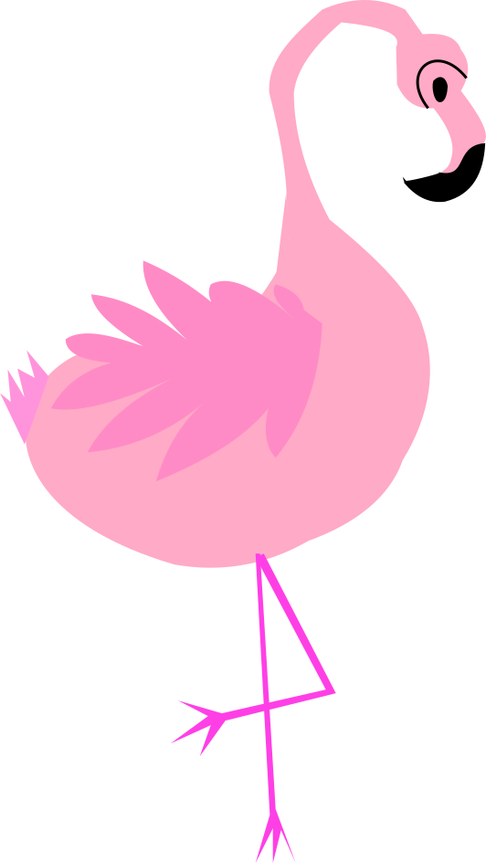
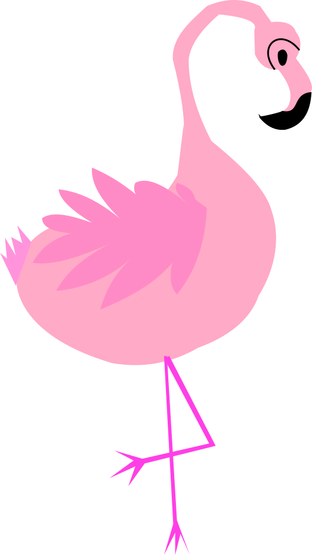
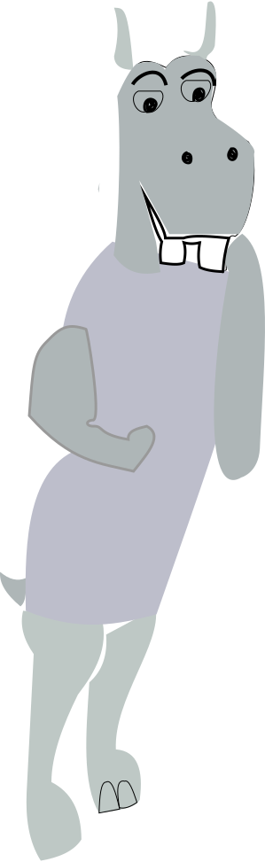
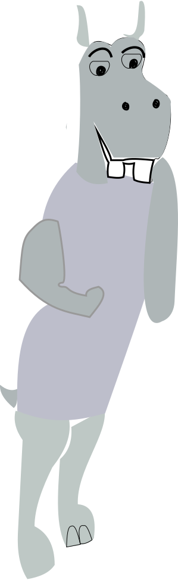
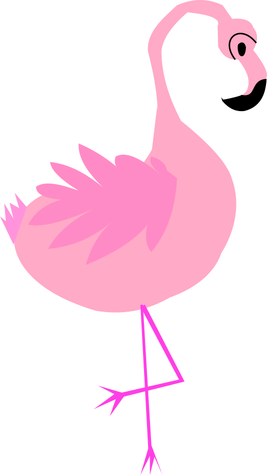
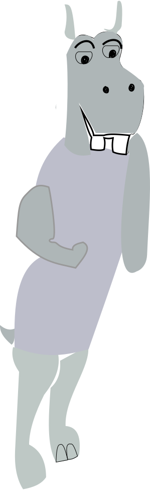

Talebobler, samt lovehearts til indsamling i spil.


 

 

Alt grafik er lavet på Illustrator selv, for at skabe en personlig stil. Jeg har taget udgangspunkt i planter omkring mig og farver på børneværelset.

